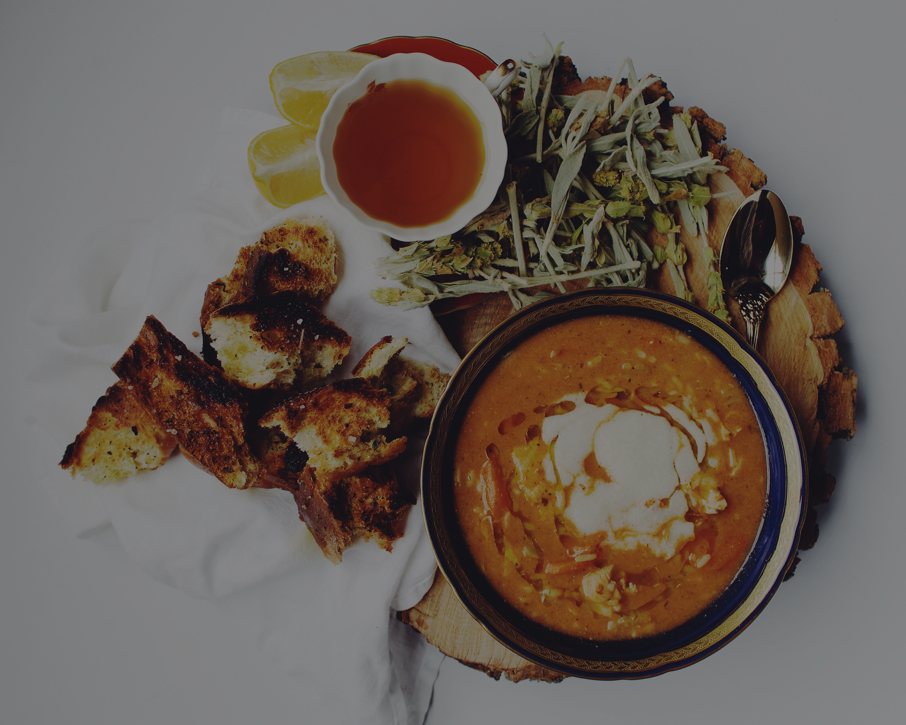

French Onion Soup

French Onion Soup
We have been trying French onion soup in restaurants for years and my family and friends agree none can compare to my recipe for taste and simplicity of preparation.
1/2 cup unsalted butter
2 tablespoons olive oil
4 cups sliced onions
4 (10.5 ounce) cans beef broth
2 tablespoons dry sherry (optional)
1 teaspoon dried thyme
salt and pepper to taste
4 slices French bread
4 slices provolone cheese
2 slices Swiss cheese,diced
1/4 cup grated Parmesan cheese
1) Melt butter with olive oil in an 8 quart stock pot on medium heat.
Add onions and continually stir until tender and translucent.
Do not brown the onions.
2) Add beef broth, sherry and thyme. Season with salt and pepper,
and simmer for 30 minutes.
3) Heat the oven broiler.
4) Ladle soup into oven safe serving bowls and place one slice of bread on
top of each (bread may be broken into pieces if you prefer). Layer
each slice of bread with a slice of provolone, 1/2 slice diced Swiss and 1
tablespoon Parmesan cheese. Place bowls on cookie sheet and broil in
the preheated oven until cheese bubbles and browns slightly.